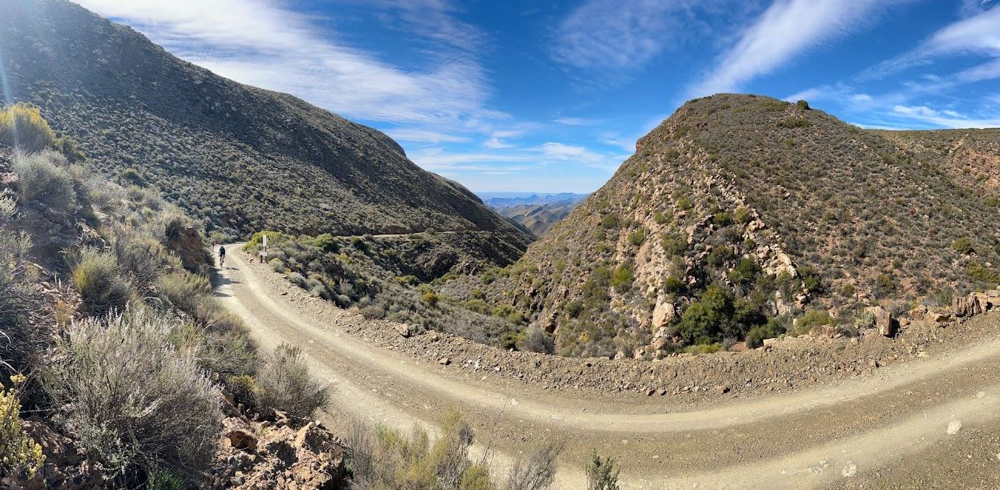
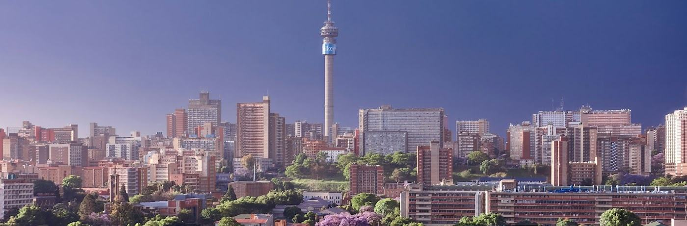
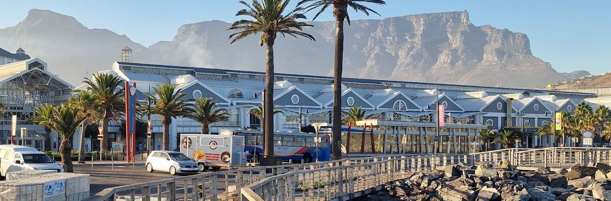

Day 1 | Johannesburg
Airport arrival, overnight and rest.
Safari, Cape Town & the Klein Karoo — one remarkable South African journey.



Begin in Johannesburg, visit the Lowveld for a wildlife safari, enjoy Cape Town’s coast and finish with supported gravel riding through the magnificent Klein Karoo.
Airport arrival, overnight and rest.
Fly to Hoedspruit for the bushveld and guided game drives.
Discover Cape Town, the coastline and the city by bicycle.
Travel inland to the Klein Karoo.
Ride Bosluyskloof and Seweweekspoort.
Climb the pass and ride toward Calitzdorp.
Ride Groenfontein Valley and finish with a winery visit.
Return transfer to Cape Town.
50% deposit to confirm, balance 30 days before tour. Detailed pricing, airline schedule and hotel availability are subject to confirmation.
Ride distances may be tailored to your needs, subject to route conditions and group logistics.
Contact the team for availability, pricing and tour arrangements.